Move ideas
forward.
Progressive is an emerging team exploring technology, design, and practical solutions to real-world problems.

Good work starts with clear thinking.
We are an emerging multidisciplinary collective. We believe the most effective digital work begins with deep listening, rigorous problem framing, and deliberate reduction. Rather than complicating systems or inflating scope, we focus on simplifying complexity and crafting clear, resilient digital products.
We do not present inflated agency credentials. We communicate early-stage capability with quiet intellectual rigor and execution craft.
No decorative fluff or ephemeral trends. Software and design systems constructed to endure through pragmatic, modular design.
What we build
Software & Web Development
UI/UX & Product Design
Business Systems & Automation
Research & Prototyping
How we approach a problem
Framed as an evolving studio practice, grounded in curiosity and pragmatic execution.
01 — Understand
Clarify the fundamental problem, users, constraints, and intended outcomes before touching any code. We prioritize shared reality over unvetted assumptions.
02 — Explore
Consider possible solution spaces, test technical feasibility, and define a practical, focused direction through clickable wireframes and functional proof-of-concepts.
03 — Build
Develop, test, and refine a lean, robust solution designed to adapt as your needs evolve. Complete handover with documentation and clean source control.
A small, dedicated group.
An honest early-stage team bringing together engineering, design, and systems thinking.
View full team & philosophy →
Systems & Architecture
Focuses on resilient backends, distributed data flows, and infrastructure clarity. Former platform developer.

Interface & Interaction
Directs typography hierarchy, typographic rhythm, spatial systems, and usable product design.

Web Engineering & Tools
Specializes in lean frontend performance, internal tooling, and pragmatic script automation.
Have an idea to
move forward?
Let's start a conversation about an idea, an opportunity, or a problem worth solving.
Q2 — Q3 2025 inquiries open
Milestone-driven cycles or embedded technical advisory
Replies usually within 2 business days